🚀 РЕЄСТР ПОЗАСОНЯЧНИХ ОБ'ЄКТІВ
Від перших кроків у пошуку екзопланет до аналізу атмосфер далеких світів. Технічний огляд найважливіших об'єктів за межами Сонячної системи.
● СТАТУС: АРХІВ ДОСТУПНИЙ ● ОНОВЛЕНО: 12.05.2026
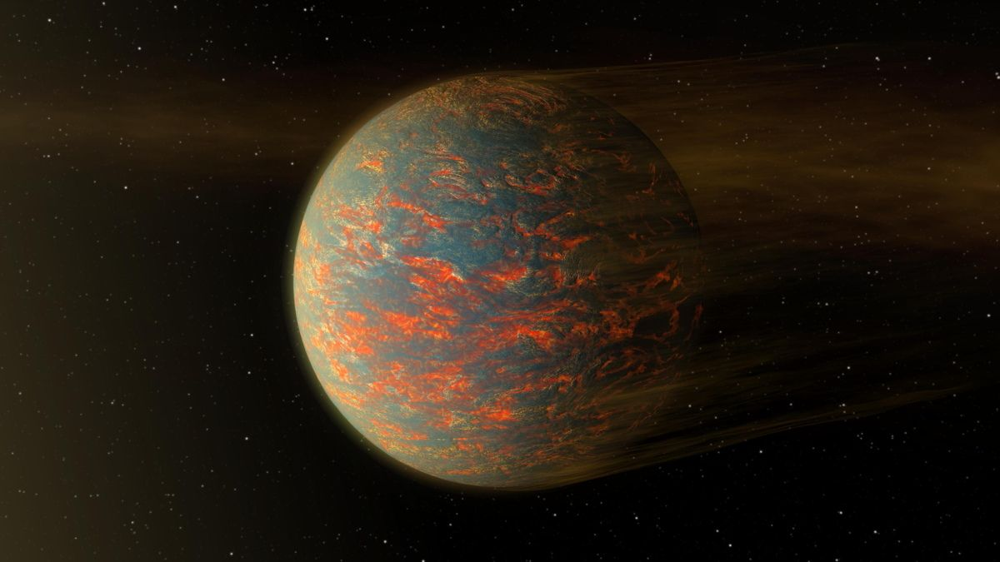
55 CANCRI E
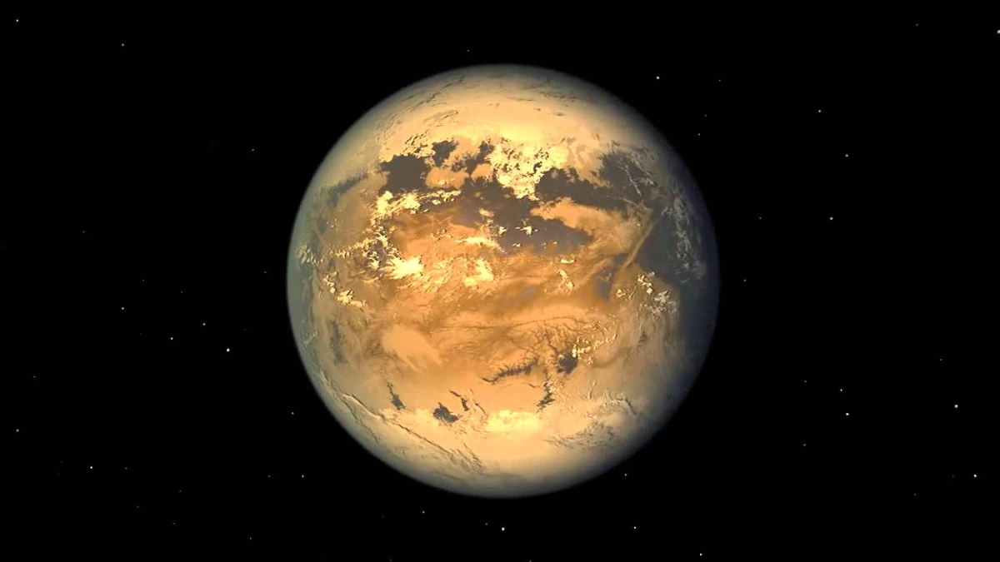
KEPLER-186F
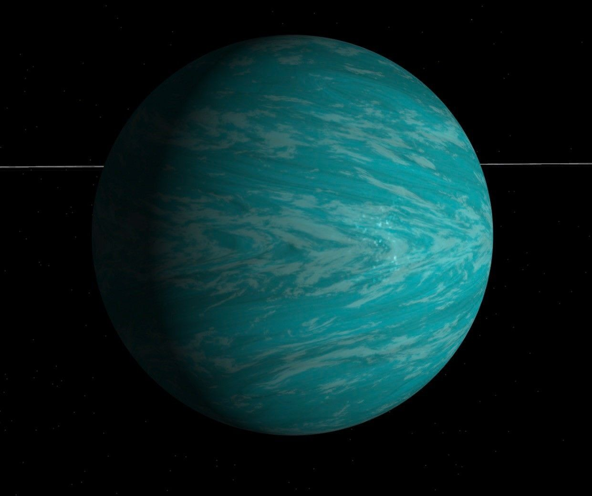
TRAPPIST-1B

PROXIMA B
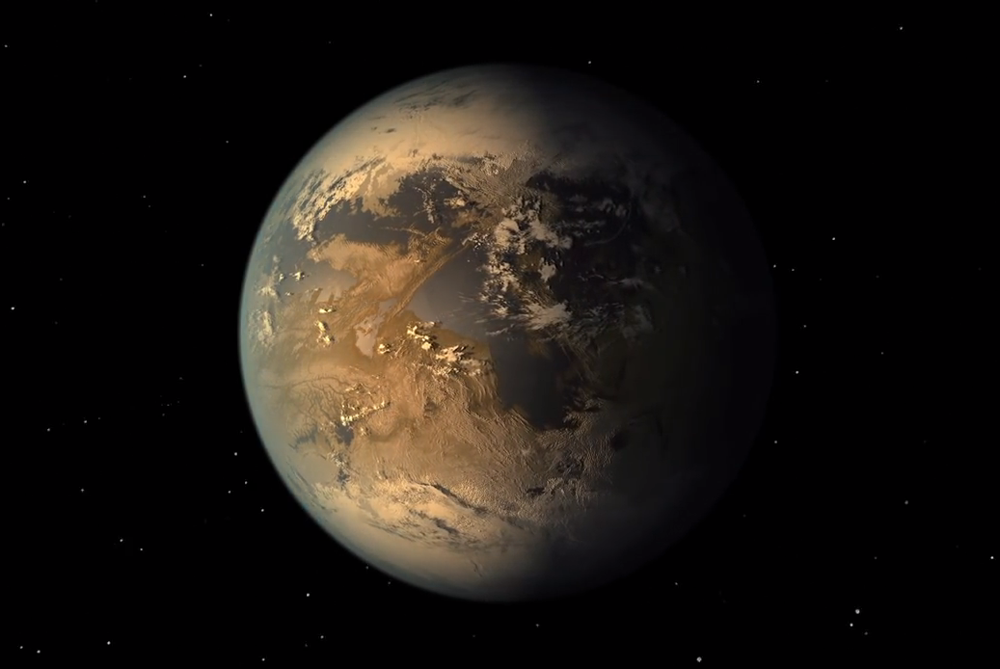
KEPLER-452B (ЗЕМЛЯ 2.0)

WASP-12B
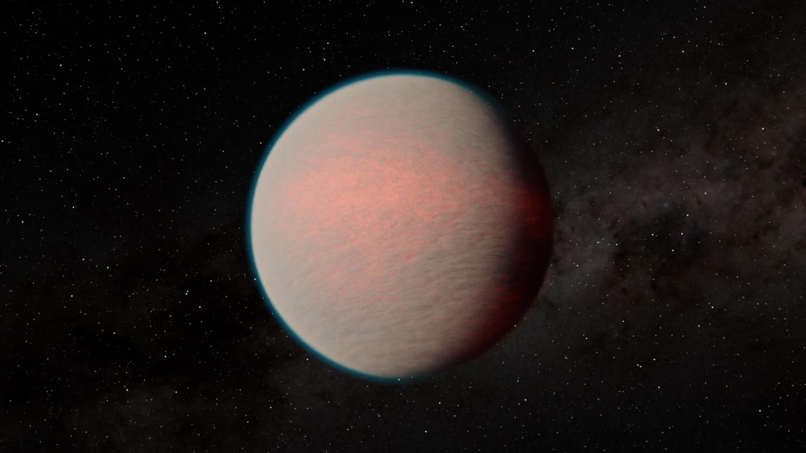
GLIESE 1214B
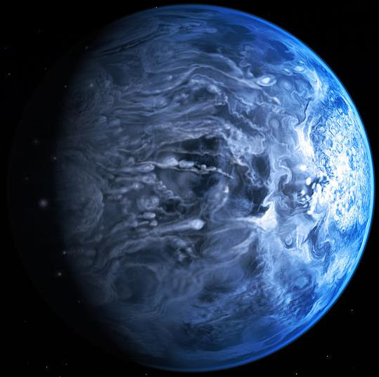
HD 189733B
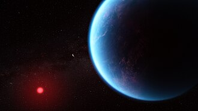
K2-18B
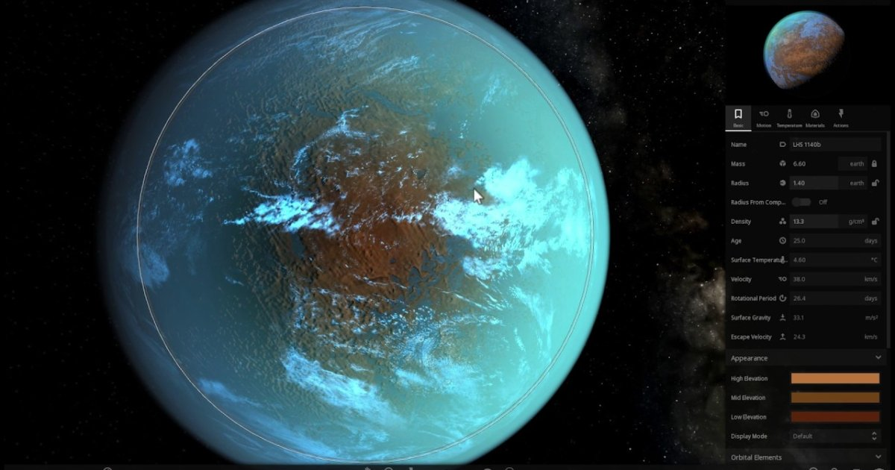
LHS 1140B
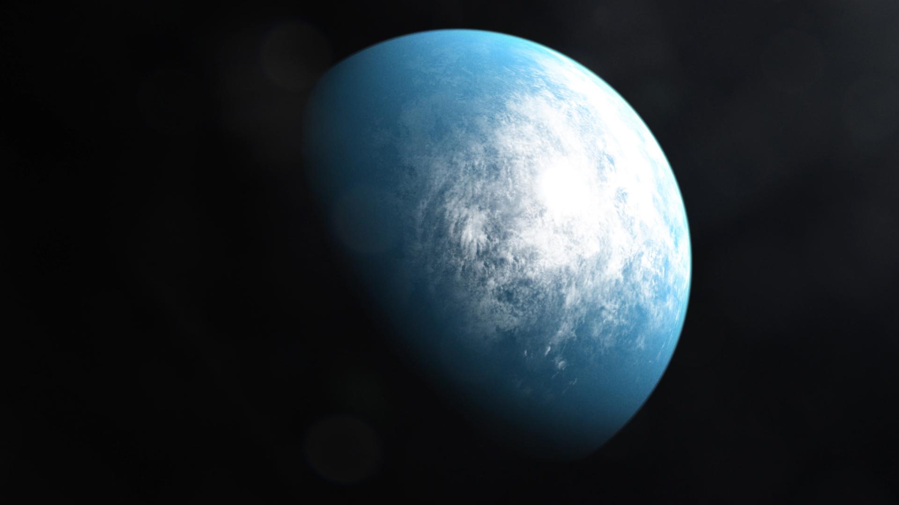
TOI 700 D
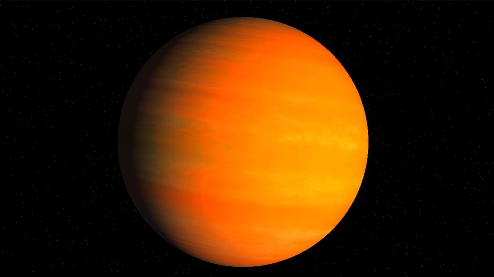
KEPLER-16B
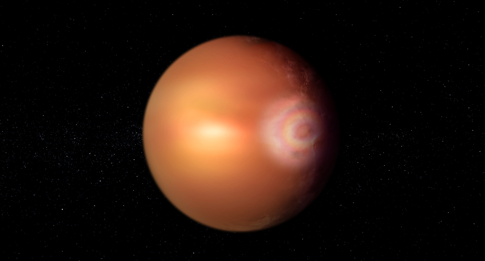
WASP-76B
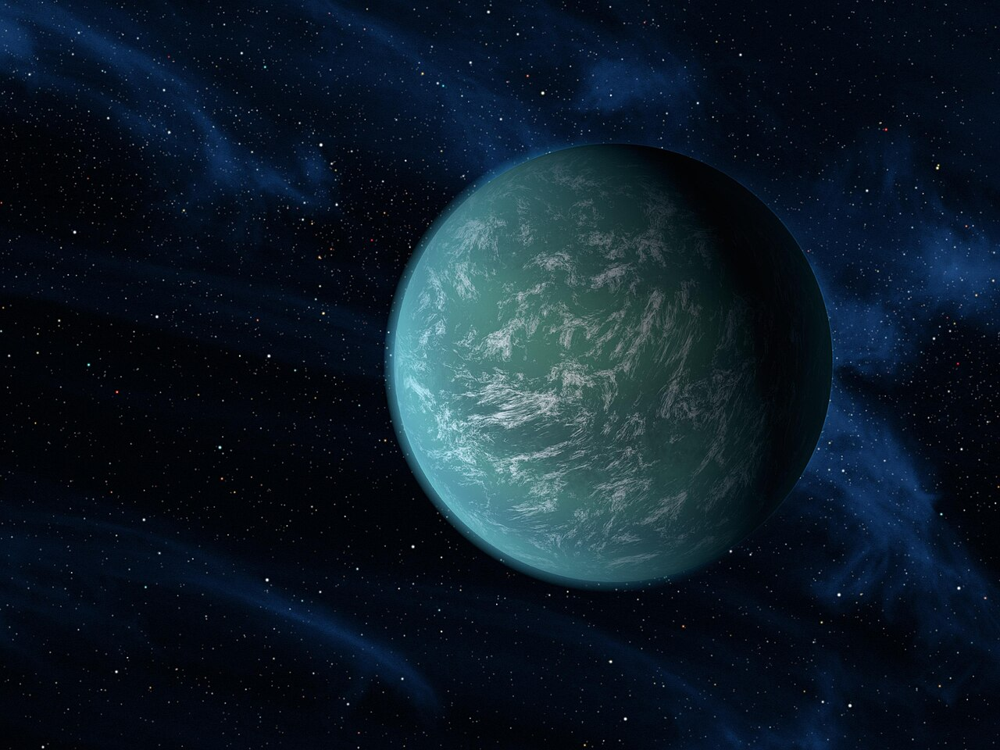
KEPLER-22B

HD 106906 B